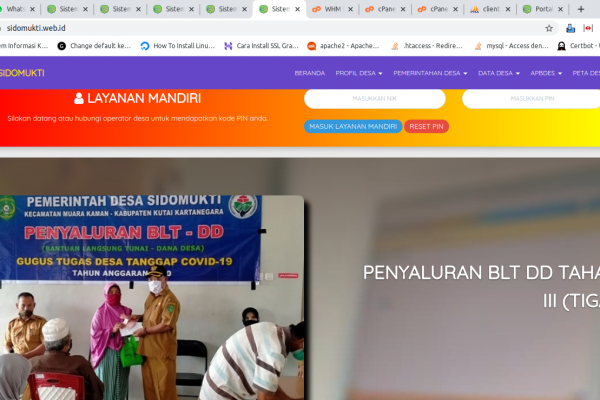
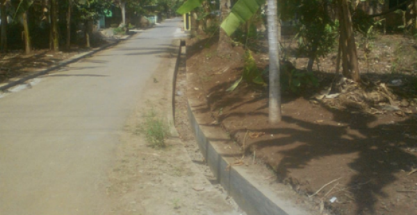
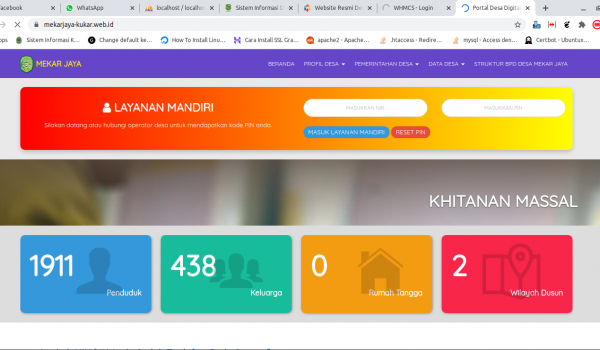

Kepala Desa Sumurbatu

| Kegiatan Anggaran | Lokasi Kegiatan Anggaran | Pelaksana Kegiatan Anggaran (PKA) | Nilai Kegiatan Anggaran |
|---|---|---|---|
| Pembangunan Rabat Beton Cor RT 02 RW 09 Dusun Kalicacing | Dusun Kalicacing | TPK Desa Ampenan Tengah | Rp 142.907,00 |
| Pembangunan Drainase RT 01-02 RW 04 Dusun Lemah Lanang | Rp 0,00 | ||
| Geliat Pembangunan Desa Gunung Rajak | Rp 0,00 |
Dengan komentar dari pengunjung website ini dapat menjadi tolak ukur peningkatan kualitas informasi Portal desa Kembang Mertha
Data belum diinput